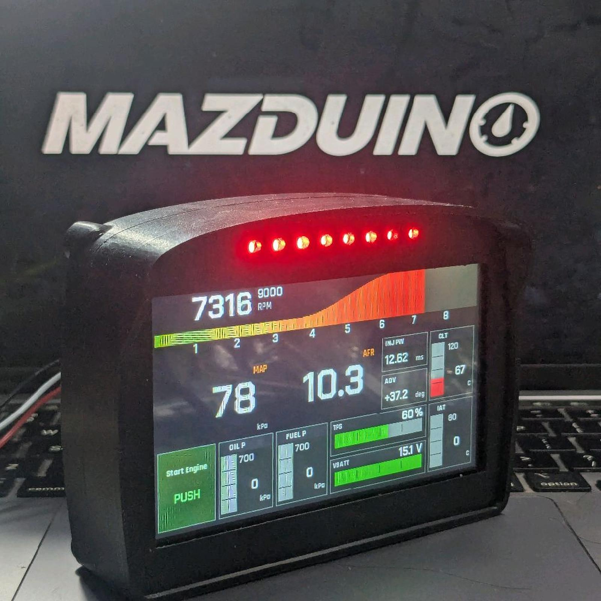

Terakhir diperbarui: 2 September 2026
Dokumentasi Mazduino¶
Selamat datang di dokumentasi resmi Mazduino. Mazduino membuat perangkat manajemen mesin standalone open-source berbasis mikrokontroler ARM Cortex beserta perangkat pendukungnya.
Lini Produk¶
| Lini | Isi | Mulai dari |
|---|---|---|
| ECU | Engine Control Unit standalone, firmware rusEFI dan Speeduino | Mazduino LITE |
| Dash Display | Layar digital yang menampilkan data ECU secara real-time | Racedash |
Baru pertama kali? Lihat Memulai di bawah — langkahnya berbeda untuk ECU dan untuk dash.
ECU¶
Engine Control Unit standalone berbasis ARM Cortex, dikonfigurasi lewat TunerStudio. Mazduino mengembangkan firmware sendiri berbasis rusEFI, dan itu yang disarankan agar seluruh fitur board terpakai optimal. Sebagian board juga dapat menjalankan Speeduino, tetapi pengembangannya sudah dihentikan — lihat tabel kompatibilitas.
Download Firmware ECU¶
Setiap release sudah berisi:
- File
.hex/.binsiap flash untuk setiap board - File
.iniTunerStudio yang matching — selalu gunakan dari rilis yang sama dengan firmware - Changelog perubahan dari versi sebelumnya
Panduan lengkap cara flash dan pemilihan firmware ada di halaman Downloads.
Firmware untuk Racedash terpisah dan diperbarui lewat aplikasi DashTune atau Mazduino Flasher — lihat halaman dash masing-masing.
Model¶
Mazduino LITE¶
Solusi ECU compact terbaru untuk engine 4-silinder dengan Wasted Spark builtin IGBT dan fitur modern.

Fitur Unggulan:
- 4 channel injector + 2 channel ignition
- 168 MHz ARM Cortex-M4 processor
- Support Hall/Optical dan VR sensors
- 6 analog inputs + 5 digital inputs
- CAN Bus, USB Type-C, Serial communication
- SD card data logging
- Konektor 30-pin Microfit (2x12 + 2x3)
Ideal untuk:
- Engine 4-silinder (NA, Turbo, Supercharged)
- Street dan track applications
- Motorcycle high-performance
- Marine dan industrial applications
Dokumentasi Mazduino LITE v0.1
Dokumentasi Mazduino LITE v0.2
Mazduino Compact 4ch¶
Engine Control Unit 4-channel yang kompak, dirancang untuk mesin yang lebih kecil dan aplikasi dengan keterbatasan ruang.
| Mazduino Compact 4ch v1 | Mazduino Compact 4ch Latest |
|---|---|
 |
 |
Fitur Umum:
- 4 channel injeksi
- Faktor bentuk kompak
- MCU ARM Cortex-M4 168 MHz
- Kompatibel dengan rusEFI dan Speeduino
Versi yang Tersedia:
- v1 - Konektor Microfit 30-pin (2x12 + 2x3)
- v2.1 - Konektor Yamaha 33-pin + Knock Sensor
- v2.2 - High Side Switching untuk alternator/VVT control
- v2.3-v2.4 - Pin mapping yang dioptimalkan, perbaikan knock sensor, dan RTC battery support
- v2.5 - Dual high side output, optimasi Hall Input, dan optimasi Analog Input
Mazduino Mini 6ch¶
Engine Control Unit 6-channel berfitur lengkap untuk kontrol injeksi sequential penuh.
| Mazduino Mini 6ch | Mazduino Mini 6ch New Case |
|---|---|
 |
 |
Fitur Umum:
- 6 channel injeksi
- Operasi sequential penuh
- MCU ARM Cortex-M4 168 MHz
- Kemampuan I/O yang diperluas
- Kompatibel dengan rusEFI dan Speeduino
Versi yang Tersedia:
- v1.0-v1.2 - Versi standar dengan fitur dasar
- v1.3 - Dengan Knock Input dan Electronic Throttle Body (ETB)
- v1.3B - MCU lebih cepat, input analog TPS2 tambahan, dan optimisasi hardware
- v1.3C - Optimisasi pin MCU, knock input tunggal, dan VDrive ignition terpisah untuk channel 1-4 dan 5-6 - versi produksi terakhir
- v1.4 - Bukan versi produksi (dokumentasi referensi); versi produksi terakhir adalah v1.3C
Mazduino Core¶
ECU generasi baru berbasis konektor otomotif 48-pin dengan arsitektur I/O yang lebih lengkap dari lini Mini 6CH, dilengkapi dual ETB, dual CAN bus, dan kombinasi input Hall + VR.

Fitur Umum:
- MCU ARM Cortex-M4 180 MHz
- Dual ETB (ETB1 & ETB2) dan Dual CAN Bus
- Kombinasi input Hall/Digital dan VR
- Konektor otomotif 48-pin
- Firmware rusEFI based
Dokumentasi Mazduino Core rev0
Mazduino X600¶
ECU dengan layar 4.3 inci terintegrasi — unit dash dan ECU menjadi satu, sehingga tidak memerlukan dash display terpisah.
Dash Display¶
Layar digital yang menampilkan data ECU secara real-time — RPM, gigi, kecepatan, dan pembacaan sensor. Dash membaca data dari ECU lewat CAN Bus atau Serial; ia tidak mengendalikan mesin.
Mazduino Racedash¶
| Racedash 3.5" / 4" | Racedash Pro |
|---|---|
 |
 |
Varian yang Tersedia:
- Racedash 3.5" & 4" — Konektor JST 4 Pin (3.5") dan DTM4 (4"/Cabus)
- Racedash Pro — M4, M5, M7 (4.3", 5" & 7") — Layar lebih besar, pengaturan lewat aplikasi DashTune
ECU yang didukung: rusEFI, Haltech, MaxxECU, Speeduino, dan OBD-II. Untuk OBD-II hanya varian CAN Bus (ISO 15765-4) yang didukung dan tidak semua mobil dapat dibaca — lihat batasannya.
Cara mengaturnya berbeda antar varian:
- Racedash 3.5" & 4" — lewat browser di mazduino.com/display-control atau lewat aplikasi DashTune, keduanya melalui WiFi yang dipancarkan dash.
- Racedash Pro M4 / M5 / M7 — lewat aplikasi DashTune melalui Bluetooth, atau dari layar sentuh dash itu sendiri. Varian ini tidak dapat diatur lewat browser.
Memulai¶
Kalau Anda memakai ECU¶
- Pilih Model — Pilih ECU yang sesuai dengan kebutuhan mesin dan aplikasi Anda
- Install Firmware — Download dan flash firmware dari github.com/mazduino/mazduino-fw
- Konfigurasi TunerStudio — Load file .ini yang sesuai dan atur parameter mesin
- Mulai Tuning — Gunakan base map sebagai titik awal dan sesuaikan untuk aplikasi spesifik Anda
Kalau Anda memakai Racedash¶
- Pasang dash — Sambungkan ke ECU lewat CAN Bus atau Serial sesuai pinout di halaman varian Anda
- Pilih protokol ECU — Sesuaikan dengan ECU yang dipakai; tidak perlu ganti firmware
- Atur tampilan — Pilih template, data tiap panel, dan lampu peringatan lewat browser atau aplikasi DashTune
Dokumentasi¶
Panduan Umum¶
- Downloads - Firmware Mazduino, file .ini untuk TunerStudio, dan panduan flashing
- Manual TunerStudio - Panduan lengkap tuning dan konfigurasi ECU
- Tentang - Informasi lengkap tentang proyek Mazduino
Dokumentasi Hardware — ECU¶
- Compact 4CH v1 - Spesifikasi dan wiring untuk v1
- Compact 4CH v2.1 - Dengan knock sensor dan konektor Yamaha
- Compact 4CH v2.2 - Dengan high side switching
- Compact 4CH v2.3 - Pin mapping dioptimalkan, knock sensor diperbaiki, RTC battery
- Compact 4CH v2.5 - Dual high side output, optimasi Hall Input, dan optimasi Analog Input
- Mini 6CH v1.0-v1.2 - Versi standar dengan fitur dasar
- Mini 6CH v1.3 - Dengan knock input dan ETB support
- Mini 6CH v1.3B - MCU upgrade, optimisasi hardware dan input analog tambahan
- Mini 6CH v1.3C - Optimisasi pin MCU, knock input tunggal, dan VDrive ignition terpisah - versi produksi terakhir
- Mini 6CH v1.4 - Bukan versi produksi; versi produksi terakhir adalah v1.3C
- Mazduino Core rev0 - Konektor 48-pin, dual ETB, dual CAN bus
- Mazduino Core rev1 - Revisi terbaru lini Core
- Mazduino X600 - ECU dengan layar 4.3 inci terintegrasi
Dokumentasi Hardware — Dash Display¶
- Mazduino Racedash 3.5" & 4" - Dash display konektor JST 4 Pin dan DTM4
- Mazduino Racedash Pro - Varian layar 4.3", 5", dan 7" (M4, M5, M7)
Dukungan¶
Untuk dukungan teknis, pertanyaan, atau kontribusi, silakan kunjungi forum komunitas kami atau repositori GitHub.
PCB Design dan Technical Resources¶
Untuk informasi detail mengenai PCB design, schematic, dan Bill of Materials (BOM) untuk perangkat keras Mazduino, silakan kunjungi:
Wiki ini berisi:
- Schematic lengkap untuk semua versi
- PCB layout dan routing details
- Bill of Materials (BOM) dengan part numbers
- Assembly notes dan manufacturing guidelines
- Design considerations dan engineering decisions
- Revision history dan changelog detail